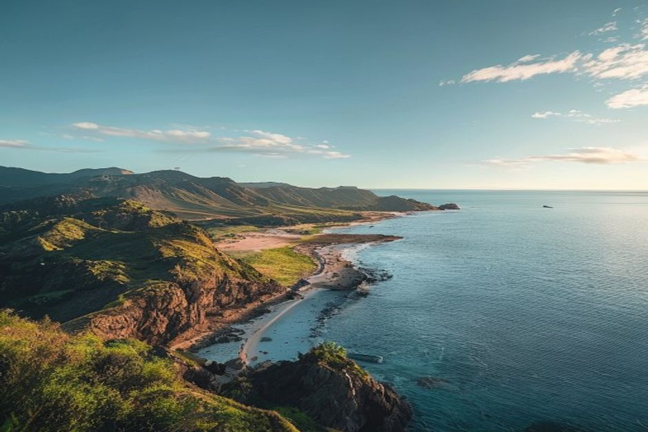
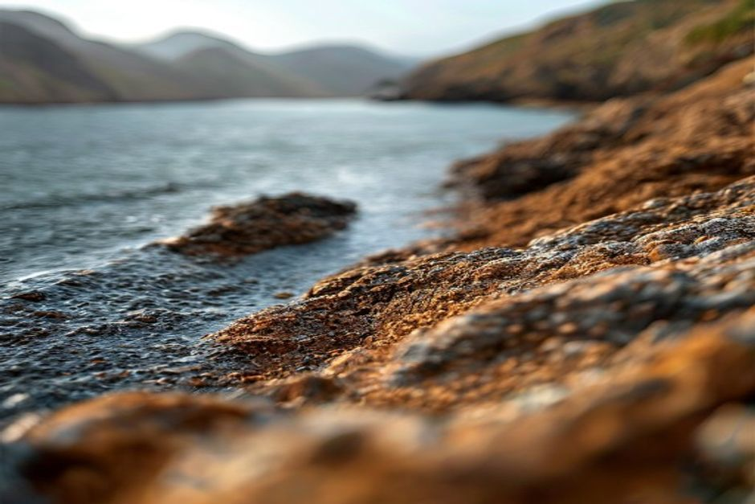

Most of Madeira is green, wet and vertical. Its eastern tip is none of those things — a bare, wind-scoured volcanic finger reaching out into the Atlantic. Here's what it is, what it takes to hike it in 2026, and what you'll actually see.
Where is Ponta de São Lourenço, and why does it look nothing like the rest of Madeira?
Ponta de São Lourenço is the easternmost point of Madeira, a narrow volcanic peninsula beyond the village of Caniçal, about 40 minutes' drive from Funchal. The rest of the island is shaped by moist Atlantic winds hitting the central mountains and dumping rain on the north and interior — which is why Madeira is famous for laurel forest and levadas. The peninsula sits in a rain shadow, so instead of ferns and til trees you get bare red, black and ochre volcanic rock, low scrub and cactus, and views that stretch to Porto Santo and the uninhabited Desertas Islands on a clear day. It's the one part of Madeira that looks closer to the Canary Islands than to the rest of itself.

Do you need to book the PR8 trail in advance?
Yes. Since 1 January 2026, every official PR (Pequena Rota) trail on Madeira — including PR8, the Vereda da Ponta de São Lourenço — requires a mandatory online reservation through the government's SIMplifica portal. You choose a trail, a date and a 30-minute entry window, and pay the fee at the time of booking: currently €4.50 per adult, with residents and under-12s registering for free. Bookings are generally non-refundable unless the ICNF (the nature conservation authority) closes the trail, and turning up without a valid reservation risks being turned away — or, in theory, a significant fine. Book a few days ahead in peak season, since popular slots do sell out.
How long is the hike, and how hard is it?
The standard out-and-back route from the Baía d'Abra car park to Casa do Sardinha and back covers roughly 8km and takes most walkers 2.5 to 3 hours at an easy, unhurried pace. There's no technical climbing, but the path narrows in places with real drops to one side, and there is zero shade for the entire route. It's rated easy-to-moderate — manageable for anyone with reasonable fitness and proper footwear, but not a stroll: bring more water than you think you need, sun protection, and shoes with grip, since the clay-like path gets slippery when wet.
What will you actually see along the trail?
The draw is geology, not greenery. The path runs along a knife-edge ridge with the ocean on both sides, past layered cliffs where you can read the island's volcanic history in bands of red, black and rust. Offshore sit two protected islets — Ilhéu de Fora, with its small lighthouse, and Ilhéu do Desembarcadouro, a strict nature reserve closed to visitors and important for nesting seabirds. About two-thirds of the way along, Casa do Sardinha is a restored former farmhouse that now serves as a small interpretation point, and a natural place to turn back. In spring, look for Echium nervosum — Madeira's endemic "pride of Madeira" — flowering in tall blue-purple spikes against the red rock, one of the few splashes of colour on an otherwise stripped-back landscape.

Is Ponta do Furado, the far tip, still open?
No. The final stretch beyond Casa do Sardinha out to Ponta do Furado — the very tip of the peninsula — has been officially closed for several years due to erosion and rockfall risk, and the closure is enforced by park rangers on site. Some hikers still push past the barriers; it isn't worth it. Casa do Sardinha and the Baía d'Abra viewpoint give you the full effect of the landscape without the risk, and it's what your SIMplifica booking actually covers.
When's the best time to go?
Go early — the car park at Baía d'Abra is small and fills up by mid-morning, the light is softer, and temperatures on an entirely shadeless trail are far more comfortable before midday. Aim for a clear day if you can: the whole point of the peninsula is visibility, and on a hazy or overcast day you'll miss the views to Porto Santo and the Desertas. The peninsula also catches more wind than almost anywhere else on the island, so check the forecast and skip it on a genuinely windy day — gusts on the exposed ridge sections are no joke.
How do you get there from Funchal?
By car, it's about 40 minutes via the VR1 motorway and ER214 to the Baía d'Abra car park at the trailhead, past Caniçal. Public bus 113 also runs from Funchal, though on a slower, less frequent schedule. There's no boat access — the peninsula sits on Madeira's northeast coast, on the opposite side of the island from Funchal's marina and the south-coast waters most boat trips operate in.
Ponta de São Lourenço shows you Madeira's volcanic geology stripped bare, on foot. The same drama repeats along the south coast, just underwater and by sea — the sheer face of Cabo Girão, coves with no road access, water clear enough to see the rock shelves beneath the keel. A morning on the trail and an afternoon on a private boat trip with Chifbay from Funchal covers both sides of what makes this island's coastline so unusual, in a single day.